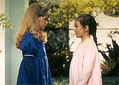
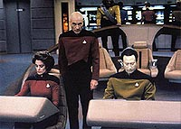
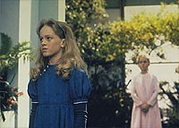
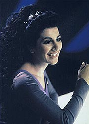
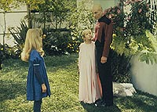

|
MANCHETE
DO EPISDIO
Enredo
enfadonho depende de
fraca caracterizao aliengena
Episdio
anterior | Prximo
episdio
Sinopse:
Data Estelar: 45832.1.
Uma jovem residente da Enterprise, uma menina chamada Clara,
levada para conversar com a conselheira Troi. Ela diz ter uma
"amiga invisvel", fato que est preocupando seu pai,
Daniel Sutter. A Betazide, entretanto, tranquiliza-o, dizendo que
o costume da garota absolutamente normal. Clara tem morado em
nave aps nave, conforme seu pai troca de posto, e sua amiga imaginria
"Isabella" est fornecendo uma companhia constante que de
outro modo no existiria.
 Enquanto
isso, a Enterprise investiga uma rara nebulosa que se formou em
volta de uma estrela de nutrons. Conforme a explorao
prossegue, uma estranha fonte de energia invade a nave e comea a
estud-la. O ser encontra Clara brincando no arboreto, e
imediatamente se materializa como a at ento invisvel e
inexistente Isabella.
Clara fica impressionada ao ver sua amiga imaginria tornar-se
real. Isabella convence a garota a fazer um tour pela nave,
concentrando-se em reas proibidas como engenharia, ponte e bar
panormico. A tripulao fica incomodada ao ver Clara aparecendo
nesses lugares inesperados, principalmente quando ela culpa sua
"companhia", Isabella. A "amiga" no pode ser
vista por nenhum dos adultos. Ao mesmo tempo, Picard e sua tripulao
se vem s voltas com misteriosas fontes de energia que cercaram a
nave como uma teia e esto fazendo com que ela perca potncia.
 Troi
decide que Clara deve encontrar outras crianas e reserva para ela
um lugar em uma aula de cermica. A garota imediatamente se introsa
com Alexander, o filho de Worf, at Isabella chegar e destruir uma
das criaes do menino-Klingon. Como Alexander no pode ver
Isabella, ele atribui a culpa a Clara. Mais tarde, uma chorosa Clara
confronta Isabella, perguntando por que ela tem sido to m.
Isabella responde friamente que quando os "outros" vierem,
Clara e todos os outros a bordo iro morrer.
Apavorada, Clara confessa ao pai que est com medo de Isabella.
Sutter contata Troi, e a conselheira acompanha a pequena at seu
quarto, para garantir que seguro. Ela olha sob a cama e no
banheiro, em um esforo para provar que no h nada se escondendo
l. Entretanto, quando ela abre o closet, Isabella aparece atrs
dela e a deixa inconsciente, ao disparar um feixe de energia.
 Estabelecendo
uma relao entre Isabella e os seres que esto drenando a
energia da nave, Picard comea uma busca pela garota. Ele a
encontra com a ajuda de Clara, e ela conta que estava a bordo para
estudar as fontes de energia da Enterprise. Quando Picard conta a
ela que h modos de fornecer a sua raa energia sem destruir a
nave, ela responde que planeja destrui-la mesmo assim, por
considerar que humanos so cruis, e maltratam suas crianas.
Picard a convence de que isso no verdade, e quando Clara pede
que Isabella poupe a tripulao, as formas de energia que cercavam
a nave desaparecem. Ela se desmaterializa e, momentos depois, os
feixes de energia desaparecem. Picard ordena a Geordi que leve aos
motores de dobra potncia mxima e direcionem a energia para a
nebulosa, fornecendo alimento aos aliengenas. Mais tarde, Isabella
diz adeus a Clara em seus aposentos, e as duas prometem sempre
continuar amigas.
Comentrios:
"Imaginary
Friend" consegue provar uma coisa: A Nova Gerao
j no depende mais de boas histrias para se sustentar como uma
srie interessante. A premissa do episdio aqui das mais
desinteressantes, o desenvolvimento bastante corriqueiro, o final
extremamente previsvel, mas ainda assim o recheio capaz de
manter o telespectador sentado na cadeira, sem reclamar (muito).
A sensao que se tem a de que divertido passar mais uma
hora a bordo da Enterprise, mesmo que no haja nada muito
interessante para ver. E exatamente isso o que acontece em "Imaginary
Friend" --trata-se de um episdio que trata de um tema
cotidiano, de forma cotidiana.
No incio, tudo no passa de uma criana com problemas psicolgicos
que a levam a criar uma companhia imaginria. No preciso ser
um gnio, ou mesmo conhecer muito da srie, para calcular como o
enredo vai se desenrolar a partir da --o que faz do
desenvolvimento da histria algo facilmente antecipado pela audincia.
 Pelo
menos, a partir do momento em que o telespectador consegue superar o
fato de que o tema do episdio pouco inspirado, fcil seguir
adiante no "piloto automtico", apenas observando as reaes
dos personagens. Alis, dos tripulantes, o nico que recebe algum
destaque por aqui a conselheira Troi.
Ela posta para bom uso, mas o papel de modo algum ajuda seu
personagem a crescer. Ela apenas o motor que faz a histria avanar,
em determinados momentos, ao inadvertidamente induzir um rompimento
definitivo entre Clara, a menina, e Isabella, a amiguinha imaginria
convertida em aliengena.
Alguns trechos do episdio so interessantes por mostrar a vida na
Enterprise do ponto de vista de uma criana. Talvez o mais
divertido deles seja o encontro de Clara e Isabella com Worf, que
age, a seu modo, de forma extremamente simptica s meninas. Mas,
de modo geral, no h grandes momentos de destaque para esse episdio.
Olhando para a outra ponta do espectro, a caracterizao dos aliengenas
to flexvel quanto a histria exige. Infelizmente, a histria
exige demais --em princpio eles so pintados como, literalmente,
o diabo encarnado (com direito a "olhinhos vermelhos" e
tudo mais), mas acabam o episdio como seres profundamente
"morais", que decidiram matar todos a bordo porque os
humanos supostamente maltratam suas crianas (!!!).
Ningum aqui prega um realismo absoluto para os enredos, mas h
certas licenas que os roteiristas tomam que chegam a questionar a
inteligncia e a ateno com que os telespectadores acompanham a
histria. Essa caracterizao dos seres da nebulosa , sem dvida,
um desses exageros.
 Shay
Astar d boa vida a Isabella, com uma atuao bastante
convincente para uma aliengena travestida de menina. Noley
Thornton (Clara) tambm no fica nada a dever a seu papel. E
Whoopi Goldberg manda a mesma enigmtica Guinan de costume, mas
infelizmente seus dilogos no esto aqui to afiados quanto
costumam ser (isso talvez tenha a ver com o fato de que o roteiro
foi reescrito para incluir sua personagem na histria, roubando
algumas falas que seriam originalmente de Troi).
Da perspectiva de fotografia, no h grandes inovaes. Os
efeitos especiais so competentes como de costume. Entretanto,
embora as tomadas em si sejam diferentes, no deixa de ser um incmodo
"deja vu" a velha histria do "aliengena-bolinha-de-luz
que passeia pelo exterior da nave para depois passear pelo interior
e finalmente se manifestar de forma corprea". Talvez isso
resuma bem a premissa desse episdio: uma velha e manjada histria,
com uma roupagem apenas ligeiramente diferente.
Citaes:
La Forge - "Now,
I was thinking about something more along the lines of the La Forge
Nebula. It has sort of majestetic sound, don't you think?"
("Agora, eu estava pensando em algo mais na linha de a Nebulosa
La Forge. Tem um som algo majestoso, no acha?")
Data - "Given the selections, I prefer FCC147."
("Dadas as opes, eu prefiro FCC147.")
Trivia:
 Desde o episdio "Ensign Ro",
no nicio da temporada, Guinan no dava as caras na Enterprise-D.
E isso continuaria at o episdio seguinte a este, porm a agenda
de Whoopi Goldberg estava livre e ela topou aparecer neste episdio.
Alguma cenas envolvendo Deanna Troi tiveram de ser reescritas para
que Guinan pudesse ter algo para fazer neste episdio.
Desde o episdio "Ensign Ro",
no nicio da temporada, Guinan no dava as caras na Enterprise-D.
E isso continuaria at o episdio seguinte a este, porm a agenda
de Whoopi Goldberg estava livre e ela topou aparecer neste episdio.
Alguma cenas envolvendo Deanna Troi tiveram de ser reescritas para
que Guinan pudesse ter algo para fazer neste episdio.
Pela primeira vez ouvimos algo sobre os pais de La Forge desde o incio
da Nova Gerao. Graas a isso, ficamos sabendo que seu
pai e sua me so oficiais da Frota.
Ficha
tcnica:
Histria de Ronald Wilderson
& Jean Louise Matthias e Richard Fliegel
Roteiro de Edithe Swenson e Brannon Braga
Direo de Gabrielle Beaumont
Exibido em 04/05/1992
Produo: 122
Elenco:
Patrick Stewart como
Jean-Luc Picard
Jonathan Frakes como William Thomas Riker
Brent Spiner como Data
LeVar Burton como Geordi La Forge
Michael Dorn como Worf
Gates McFadden como Beverly Crusher
Marina Sirtis como Deanna Troi
Elenco convidado:
Noley Thornton
como Clara Sutter
Shay Astar como Isabella
Jeff Allin como alferes Daniel Sutter
Brian Bonsall como Alexander
Patti Yasutake como enfermeira Alyssa Ogawa
Sheila Franklin como alferes Felton
Whoopi Goldberg como Guinan
Episdio
anterior | Prximo
episdio
|